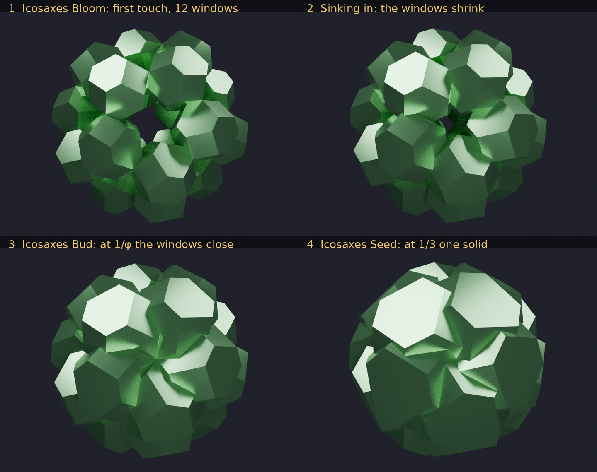
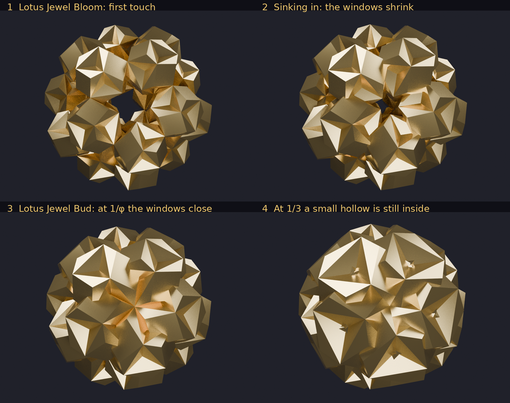
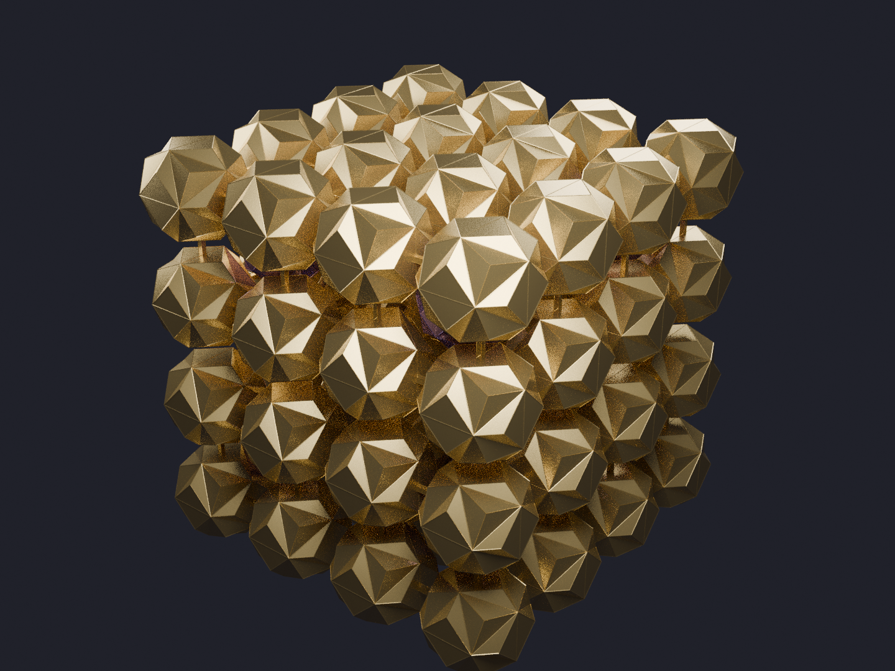

Twenty golden truncated octahedra closing round a centre in three golden steps, and the network they make
DICTO's idea (27 October 2026): "a stella jewel icosahedral kagome style network", with "a hex jewel style treatment" — the Hexa as the inspiration, not the shape. For the pieces DICTO chose the golden-split pair, the Icosaxes and the Unborn Axes (#48, DICTO DOI 10.5281/zenodo.23596362), which fill space together as the DICTO Jewel and the stella do in the Stella–Jewel lattice (#17, DICTO DOI 10.5281/zenodo.23376317; #18, DICTO DOI 10.5281/zenodo.23376320).
Theorem. Place twenty Icosaxes (icosahedron edge 1), one on each corner of a dodecahedron, each turned by the rotation of the icosahedron that carries the direction (1,1,1) to its corner, and let d be the distance of their centres from the middle. Bringing them in from far away:
(i) they first touch at d = φ²√3/2, as the Icosaxes Bloom, meeting along the thirty edges of the dodecahedron, with twelve open pentagonal windows;
(ii) the twelve windows close at the same moment at d = φ√3/2, exactly 1/φ of the first-touch distance, leaving the Icosaxes Bud, sealed round a hollow;
(iii) the hollow fills at d = φ²/(2√3), exactly 1/3 of the first-touch distance: the Icosaxes Seed, one solid.
With Lotus Jewel Axes (the Icosaxes with its eight Tricaps taken out) the hollow fills later, at d = √3/(2φ), exactly 1/φ³ of the first-touch distance, where the Tricap tips meet.

The Icosaxes is a cube cut by an octahedron: the points with |x|, |y|, |z| ≤ φ/2 and |x| + |y| + |z| ≤ φ²/2. Its eight hexagons lie at distance φ²/(2√3) from its centre, exactly the inradius of its icosahedron. Volumes: Icosaxes 1 + 2√5/3; Unborn Axes 1 + √5/3; Lotus Jewel Axes √5; Dodecaxes 2; Tricap (1 − √5/3)/8.
First touch. Two neighbours on an edge of the dodecahedron are convex, so their insides are disjoint exactly when some face direction of either piece, or the cross product of an edge direction of each, separates them. Along each such direction the gap is linear in d; the least d with a gap ≥ 0 is φ²√3/2 (exact, sympy).
Windows. By symmetry the last point of a window to close lies on its five-fold axis. That axis first meets one of the five pieces round it when d = φ√3/2, the largest d of a two-variable linear programme in (position on the axis, d), solved exactly.
Hollow. By symmetry the last point of the hollow is the centre. The centre lies in a piece once d is at most the distance of the piece's inward face: the hexagon at φ²/(2√3) for the Icosaxes; for the Lotus Jewel Axes, the tip of the Tricap dent at √3/(2φ).
Lotus Jewel Axes. The Lotus Jewel Axes is the Icosaxes with eight Tricap dents taken out, so it can touch no earlier and close no earlier; it does both at the same distances, because the places where the Icosaxes meet avoid the dents. At first touch two neighbours meet across a flat patch of face, none of it in a dent; when the windows close, the five-fold axis lies flat on a face of each of the five pieces round it and meets each along a segment, none of it in a dent (a hair further out the axis misses the pieces, a hair further in it enters).
Checks: joined-solid sweeps (manifold3d) agree at every stop: twelve windows above 1/φ, a sealed bud between 1/φ and the end of the hollow, one solid below. The two symmetry steps — the last point of a window lies on its axis, the last point of the hollow is the centre — are what the sweeps show at every stop.

In the golden-split lattice (Icosaxes at the points (φ/2)(2ℤ)³, Unborn Axes at (φ/2)(2ℤ+1)³), eight Icosaxes on the corners of a cube round one Unborn Axes make one closed solid of volume 9 + 6√5. It is the same solid as nine Icosaxes passing through each other: an Icosaxes in the middle overlaps each corner one by √5/24, and what is left of it is exactly the Unborn Axes. This is not special to the golden point. In every member of the golden bond (#48) a cube of the lattice is filled exactly by the parts of its eight corner pieces inside it and the partner piece at its centre; a ninth corner piece placed at the centre stays inside that cube, and whenever the corner piece is at least as large as its partner (from Kelvin's truncated octahedron onwards) it contains the partner. So nine corner pieces passing through each other always make the same solid as eight round a partner; the golden pair is the case named by DICTO.
As in the Kagome Hulls (#17), clusters may share single pieces, no piece in more than two clusters and no two clusters sharing more than one. The cube cluster of §5, anchored on a body-centred lattice of Unborn Axes sites, puts every Icosaxes in exactly two clusters, each cluster with eight neighbours — as perfect as the rhombohedron was in #17. The other hulls share less: octahedral 74%, cuboctahedral 42%, rhombic dodecahedral 24% of the Icosaxes held twice.
With a Dodecaxes at each cluster centre, each Icosaxes takes the two Dodecaxes keys on the hexagons facing its two centres and carries a Tricap key outward on the other six, into the network's open spaces. No two pieces overlap. This piece has volume exactly φ² = (3 + √5)/2.

Twenty icosahedra on the corners of a dodecahedron: the Wolfram Demonstration "Cluster of 20 Icosahedra"; twenty great icosahedra likewise: G. Hart, Polyhedra Clusters; cubes in icosahedral clusters: S. Kabai, 30 Cubes on a Rhombic Triacontahedron (2010); the truncated octahedra x = τ and 1/τ, which DICTO named Icosaxes and Unborn Axes: Koca et al. (2015); corner-sharing cube nets: Molecules 24(7):1221 (2019). Not found in the sources searched (a library of 302 references, and the web, 27 October 2026): truncated octahedra on the corners of a dodecahedron, the golden stops, or this network.
Study folder k-research studies/2026-10-27-icosaxes-twenty: exact proof exact.py (sympy); sweeps twenty*.py (manifold3d); network kagome-b.py and check-net.py; data and renders.
DICTO's working names: Icosaxes Bloom, Bud and Seed (and Lotus Jewel Bloom, Bud, Seed); Icosaxes Hexa (keyed: Lotus Hexa); Keyaxes; Icosaxes Kagome.